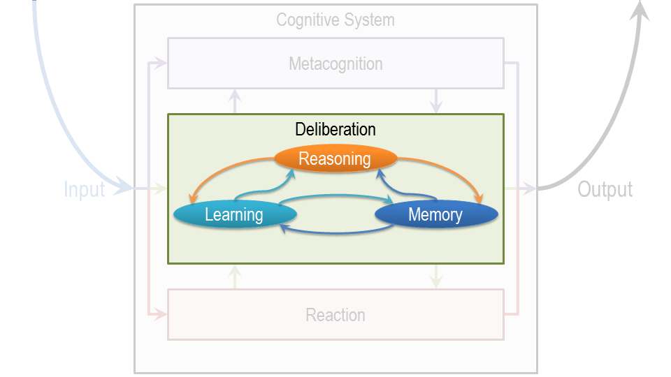

Section 05: Levels of Cognitive Architectures¶
 We can build queries of knowledge based AI at many levels of instructions. This is the scale here, low level to high level. At one level, we can build queries at hardware level. So we can talk about a brain or transistor sort of microchip. At the next level, we can talk about the kinds of methods and the kinds of representations we have been talking about, means-ends analysis that has an algorithm associated with it, or semantic network that’s a knowledge representation in some symbolic form. At a yet higher level, we can talk about knowledge and tasks. So, the question here becomes what exactly is the task the decision maker has to make? What exactly is the knowledge the decision maker has? So, when David was giving his answer about what the pitcher might do in the situation I showed you earlier, David was clearly using a lot of knowledge, and he was trying to use this knowledge toward to a particular task. Now, in the history of AI, David Mark talked about three levels, the level of tasks, which he called the [computational] theory, the level of algorithms and the level of implementation. And [computational] talked also about multiple levels. He was talking about the knowledge level, the symbol level and lower levels like the hardware. The various levels are connected with each other. So I might think that, the hardware level is a level for implementing what is happening at the algorithm level. And the algorithm level provides and architecture for implementing what is happening at the task level. In the opposite direction, I might think that the task level provides the content of what needs to be represented or manipulated at the algorithm level. And the algorithm and symbol level provide the content for what needs to be manipulated at processor, the hardware level. So as an example, one might say, we’re representing this in a form of a semantic network, fair enough. But, what exactly are you going to represent in a semantic network? That’s going to come from the knowledge level. It is the knowledge level that tells us, what is the content of the knowledge that is required to play baseball? Once you have the content of knowledge, you can perhaps implement it in many different ways. One way is through semantic network. Similarly, once you know what kind of decision you have to make, and what a decision-making process might look like overall, there might be many different methods of making that particular decision. Just like we can build a relationship between the task level and the algorithm level, a similar relationship exists between the algorithm level and the hardware level. This is an important point, so let me take another example. All of you are familiar with your standard smartphone. Let us suppose that I was coming from Mars, I was a Martian. And I did not know how your mobile phone works. So I would ask you, well, how, exactly, does your mobile phone work? And you might give an account of how the phone works at that level of distraction. There will be a legitimate account, you have somewhere else for give an account of how the smartphone works at a, at a level of tasks and knowledge. This person might say, well, a phone allows you to communicate with other people at long distances. How that is implemented is a different matter. Now you will see, I’m sure, that all three of these interpretations, all three of these descriptions are legitimate and valid. You will see also, that we really need all three of these levels of description. We do need to understand what this smartphone does, and that kind of knowledge it uses to do it. We do need to understand what kind of algorithm and knowledge presentations it uses, and what kind of hardware implements all of this. Now, you can do a similar kind of analysis for other kinds of devices. Let’s say, like your calculator. Could we do a similar kind of analysis for intelligent agents? Are these different layers also meaningful for analyzing what happens in cognitive systems, whether they are natural or artificial? And at what layer should we be building a theory? Our hypothesis is, that these three layers are also useful for trying to analyze how cognitive systems might work, but natural cognitive systems and artificial cognitive systems. Further, our hypothesis is that we want to build theories at all three of these different level, levels of abstraction, not at any one of them. In fact, their constraint’s flowing in both directions. If we know about what kind of tasks we want to do and what kind of knowledge we want to use, then that tells us something about what kind of algorithms we need to and what kind of knowledge representations we need. And that tells us something about what kind of hardware we need. In the other direction, if we know what kind of hardware we have that imposes constraints and provide [computational] for what kind algorithms and knowledge representations can be there, which then provides accordance within constraints. Well, what kinds of tasks can be done and what kind of knowledge can be used. In this class, we’ll be concerned mostly with the top two layers, although I allude occasionally to the third layer as well. A lot of work in AI is at the top two layers of abstraction.